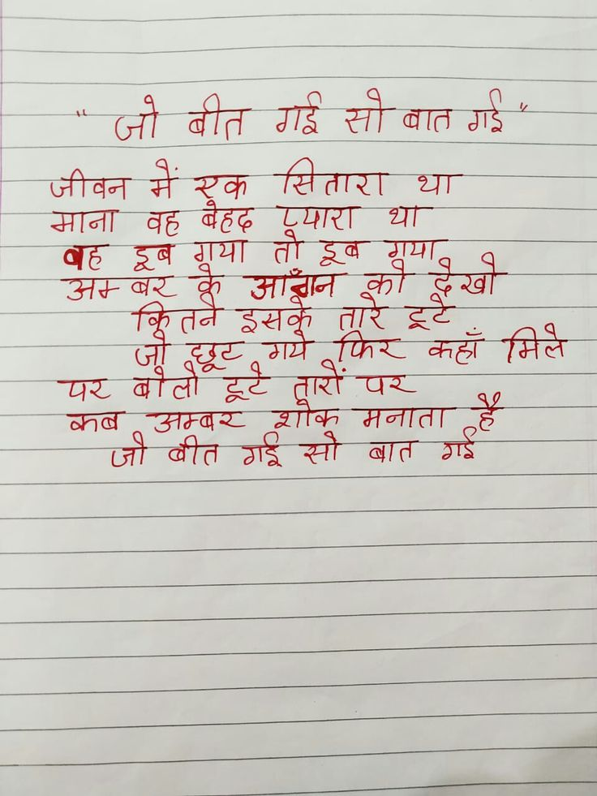

File: hin_sample_21.jpg

⚠️ No Output
## जो बीत गई सो बात गई" जीवन में एक सितारा था माना वह बैहद प्यारा था वह डूब गया तो डूब गया अम्बर के आँगन को देखो कितने इसके तारे टूटे जो छूट गये फिर कहाँ मिले पर बोली टूटै तारों पर कब अम्बर शौक मनाता है जो बीत गई सो बात गई There is no text in this image. It shows a blank sheet of lined paper.
- >जीवन में wan eae ar ars cee —— 6 sa J ce | ec ot eta aig सो बात गई = 2 ae see जज हे eS es — re — ee ee eT” ——————— << कि ण
Se की की करन व 7 बह इब शया तो टब शा “Ha के न का eel
सितारा था था माना गया वह अ+ तने प२ पर मनाता शाक ऊम्वर कव गड्र सो बात
❌ OCR Failed
ॲप्ल।
जौ तेत गई सीबात गई जीवन मैस्कु खितारा था। गाना वद बहद डूमार था। ग़६ हूब ग़या ती इ्ब-ममाद उत-ज़र कू जादूँगन क़क ईि क्तर्ने इश्खरवकू तर हँ गर फिर कहां मिले ज़ड इछुः ७९ ग़र बलो टूर्टे दर पार ब।प उतठबार शगंव। गेण ह्ँ जी बीत गई सौ बात गाइ
जो बीत गई सीबातगई जीवन मेरक मं रक सितारा थ्रा माना बह डषगूयां डूब बह ग्रया बेहढ तॉ तोडूब पपार डूब था थ्रा ग्रया अम्बर ब ऑॉबन तूारेंटूट क द्ेखो क्ितने जॉ छट इमके गये तारे फिर टू कहॉं मितते पर बोतोटूट बोतो शोक तारीं मनाता पर हँ कब जोबीत जॉ बीतंगईसो अम्बर बीत गईसो बात